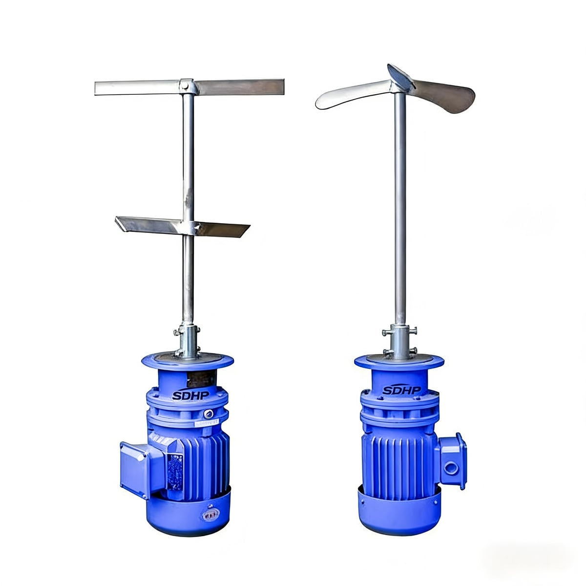

六大核心产品，覆盖水处理全场景需求

处理量
50-500 m³/h
分离精度
0.1-1 μm
磁种回收率
≥99%
功耗
0.5 kW/m³
采用超磁分离技术，通过投加磁种使悬浮物形成磁性絮团，经超磁分离设备快速打捞，实现高效固液分离。广泛应用于河道湖泊治理、工业废水处理及市政污水处理提标改造。
集成絮凝、沉淀、浓缩于一体，采用斜板沉淀与污泥回流技术，大幅提高沉淀效率。出水浊度低、抗冲击负荷能力强，适用于饮用水处理及污水深度处理。
表面负荷
15-30 m³/m²·h
出水浊度
< 3 NTU
采用多级精密过滤介质，有效去除水中悬浮物、胶体物质及部分溶解性污染物。过滤精度可按需调节，适用于各类水处理工艺的深度处理环节。
过滤精度
1-100 μm
工作压力
0.2-0.6 MPa
采用"预处理+膜分离+蒸发结晶"的组合工艺路线，实现废水零排放。膜系统包括超滤、纳滤、反渗透等多种膜组件，根据水质定制最优方案。
回收率
≥85%
产水水质
优于回用标准
利用UVC紫外线的DNA破坏作用，对水体中的细菌、病毒、原生动物等微生物进行高效灭活。不添加化学药剂，无二次污染，杀菌速度快、效率高。
杀菌率
≥99.9%
灯管寿命
9000+ 小时
以石英砂为滤料的反硝化滤池，在缺氧环境下利用反硝化细菌将硝酸盐氮还原为氮气，实现深度脱氮。同时具备截留悬浮物的功能，出水水质稳定达标。